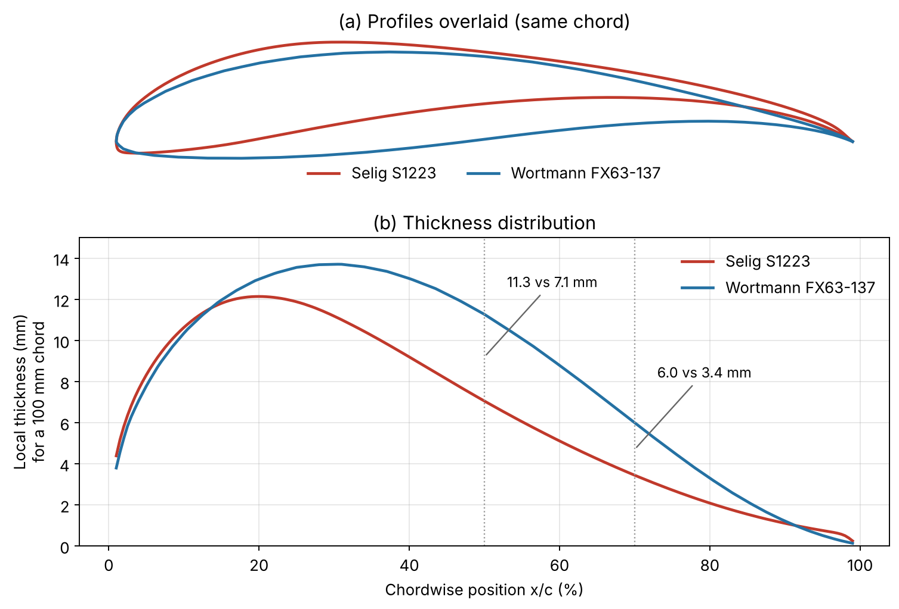
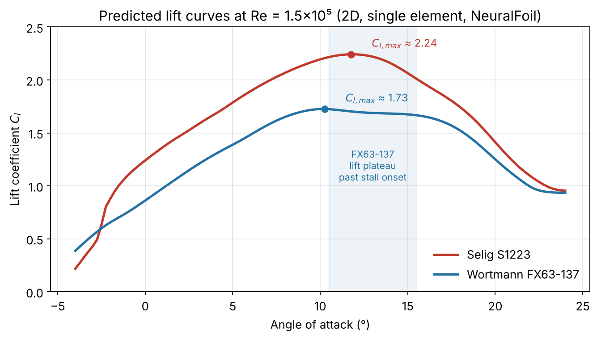
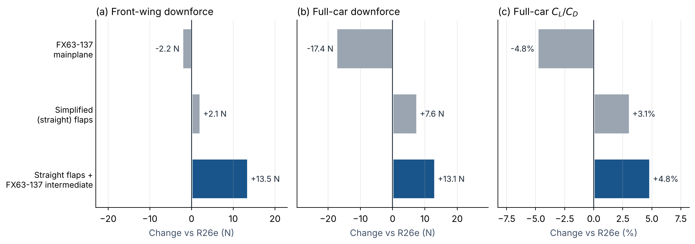

Chapter 6 · Design
6.1 Front Wing
6.1.1 Mainplane
The mainplane of the front wing generates most of the downforce. The NACA 632-615 airfoil profile is used for the car, modified to fit manufacturing.
Replacing the mainplane with the Wortmann FX63-137 was also simulated in cornering. Front-wing downforce changed only slightly, from 113.2 N to 111.0 N, but full-car downforce fell by 17.4 N (from 322.1 N to 304.6 N) and full-car CL/CD dropped from 2.27 to 2.16 (Table 1). The much larger loss at full-car level suggests that the FX63-137 mainplane changes the flow delivered to the components downstream of the front wing. The NACA 632-615 mainplane was therefore retained.
6.1.2 Flap Design and Airfoil Selection
The flaps allow the front wing to reach a higher effective camber, and thus more downforce, than a single element could before the flow separates. Each slot between elements feeds high-energy air from the pressure side of one element onto the suction side of the next, re-energising its boundary layer and delaying separation. Because the elements play different roles, they do not need to share the same profile. The final flap sits at the end of the chain, so its job is simply to produce as much lift as possible. The intermediate flap must also produce lift, but in addition it conditions the flow entering the final flap’s slot. It therefore needs to stay attached over a range of local inflow angles, which change with ride height, roll and yaw during cornering (Section 4.1). If it separates, the final flap is degraded as well.
The R26e used flaps that were curved along the span. These improved cornering performance but were difficult to manufacture accurately (Section 7.3). For the R27e, the flaps were redesigned as straight sections, and the flap profiles were re-selected so that downforce no longer depended on that curvature. In cornering CFD, simplifying the flaps did not cost performance: front-wing downforce rose slightly from 113.2 N to 115.3 N, and full-car CL/CD rose from 2.27 to 2.34 (Table 1).
Final flap: Selig S1223 (retained). The S1223 was designed for maximum lift at low Reynolds number. In wind-tunnel tests at Re = 2×105 it reached a maximum lift coefficient of about 2.2, roughly 25% above earlier high-lift airfoils such as the FX63-137 [1]. It achieves this with a concave upper-surface pressure recovery and heavy aft loading, accepting some trailing-edge separation as the cost [1]. On the last element this trade-off is acceptable, because no downstream element depends on its wake. The S1223 is also one of the most widely used high-lift profiles on Formula Student wings [2].
Intermediate flap: Wortmann FX63-137. The FX63-137 has a lower peak lift (Cl,max ≈ 1.75 [1]), but it was chosen for the intermediate flap for three reasons.
- Gentle stall. Its stall begins at the trailing edge and the separation point moves forward gradually, which leaves a flat plateau in the lift curve past stall onset rather than a sharp drop [1]. A 2D analysis at a representative flap Reynolds number of 1.5×105 reproduces this (Figure 4): in the 4° after peak lift, the FX63-137 loses about 0.04 in Cl, while the S1223 loses about 0.26. For an element whose wake feeds the final flap, this tolerance to off-design inflow matters more than peak lift.
- Precedent in race-car wings. The FX63-137 has been used for both the main element and the flap in published studies of two-element race-car wings [3].
- Manufacturability. The FX63-137 is thicker overall (13.7% of chord against 12.1%) and much thicker over its rear half. On a 100 mm chord it is 11.3 mm thick at mid-chord against 7.1 mm for the S1223, and 6.0 mm against 3.4 mm at 70% chord (Figure 3). It also has less camber (6.0% against 8.7%). A thicker, less curved section is stiffer and easier to lay up in a mould without the vacuum bag bridging or the part distorting. This addresses the flap defects described in Section 7.3 and reduces the simulation-to-manufacturing mismatch described in Section 4.2.


One known drawback of the FX63-137 is stall hysteresis: once stalled, it reattaches only at a noticeably lower angle of attack [4]. The intermediate flap is therefore set with a margin below its stall angle. The choice was then checked in CFD of the full front wing (Sections 6.1.3 and 6.1.4).
6.1.3 Pressure Distribution Comparison
Figure 5 shows the pressure coefficient distribution on an inboard section of the R26e front wing, with red indicating high pressure and blue indicating low pressure. The wing runs inverted, so the suction (downforce-producing) side of each element is its lower surface. A region of elevated pressure sits at the leading edge of the final flap, where the flow leaving the slot behind the intermediate flap meets the final flap. This indicates that the slot flow is not accelerating onto the final flap’s suction side as intended, which reduces the suction the final flap can generate and makes it more prone to separation.
Figure 6 shows the same section after the intermediate flap was replaced with the FX63-137. The high-pressure region at the final flap’s leading edge is no longer present, and the suction on the underside of both flaps appears stronger, with a smoother pressure recovery along each element. This is consistent with the intermediate flap now staying attached and delivering cleaner slot flow to the final flap, as intended by the selection criteria in Section 6.1.2. Section 6.1.4 quantifies the resulting gain in downforce.
6.1.4 Cornering Performance Comparison
Each front-wing change was simulated on the full car in the cornering condition, since cornering is where the team stands to gain the most (Section 3). Table 1 lists the results, and Figure 7 shows each configuration’s change relative to the baseline R26e. Full-car CL/CD is the ratio of full-car downforce to full-car drag.
| Configuration | Front-wing downforce (N) | Front-wing drag (N) | Full-car downforce (N) | Full-car drag (N) | Full-car CL/CD |
|---|---|---|---|---|---|
| Baseline R26e | 113.2 | 19.57 | 322.06 | 141.75 | 2.27 |
| FX63-137 mainplane | 111.0 | 20.10 | 304.62 | 140.61 | 2.16 |
| R26e with simplified (straight) flaps | 115.3 | 19.90 | 329.62 | 141.09 | 2.34 |
| FX63-137 intermediate flaps (selected) | 126.69 | 21.30 | 335.15 | 140.62 | 2.38 |

The selected configuration, with straight flaps and an FX63-137 intermediate flap, gave the largest improvement on every downforce and efficiency measure. Front-wing downforce rose from 113.2 N to 126.7 N (+13.5 N, +11.9%), and full-car downforce rose from 322.1 N to 335.2 N (+13.1 N, +4.1%). Compared with the straight flaps alone, the FX63-137 intermediate flap added 11.4 N of front-wing downforce, which is consistent with the cleaner slot flow onto the final flap seen in Section 6.1.3.
This gain came with a small increase in front-wing drag, from 19.6 N to 21.3 N (+1.7 N). However, full-car drag fell slightly, from 141.8 N to 140.6 N (−1.1 N), so the extra wing drag was more than offset elsewhere on the car, most likely by the changed flow reaching the components behind the front wing. The front wing’s own downforce-to-drag ratio still improved, from 5.78 to 5.95, and full-car CL/CD rose from 2.27 to 2.38 (+4.8%). The front-wing redesign therefore meets both aims set in Section 3: more cornering downforce and better aerodynamic efficiency, while also being simpler to manufacture.